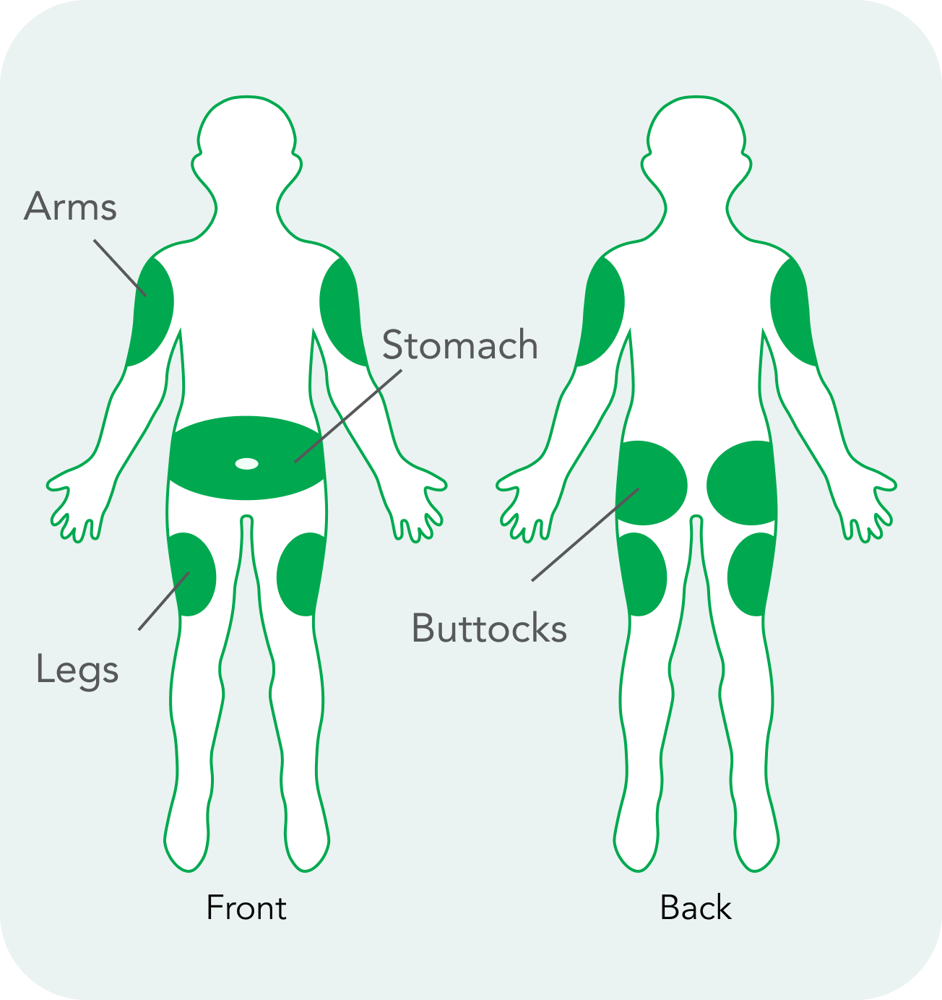

With an insulin pen.
- ALWAYS prime the pen with each injection, not just the first time you use the pen.
- ALWAYS hold injection in for 10 seconds after you have injected the full dose.
With a syringe and vial.
- Make sure air bubbles are not present- they are not harmful, but necessary to remove to ensure receiving full dose of insulin.
Site rotation.
- Sites to use abdomen, buttocks, arms, thighs. See page 18 of green book!.
- Importance of site rotation- improve insulin action, decreases scar tissue.
- Change the site where you give shots each tie. If not, your body might make scar tissue under the skin and insulin may not be absorbed as well as it should and your blood sugar may remain elevated!.
